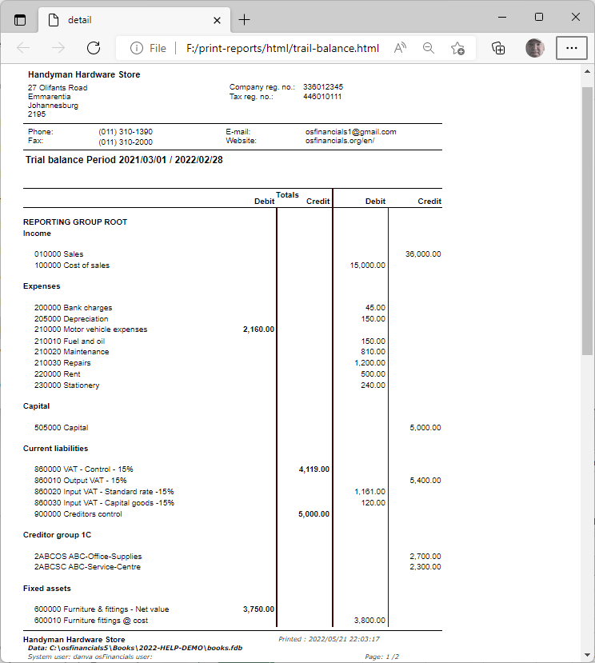
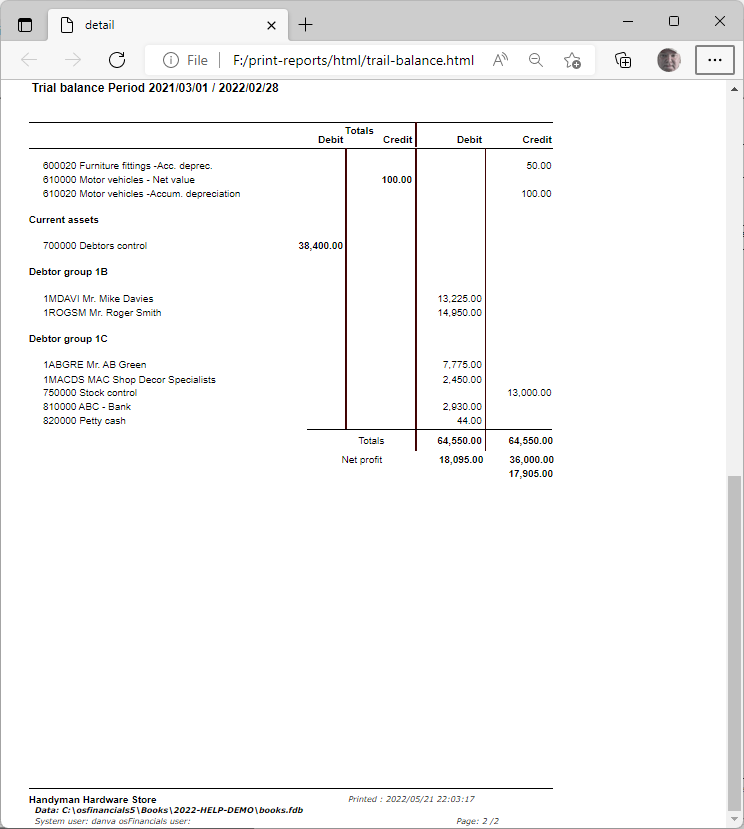
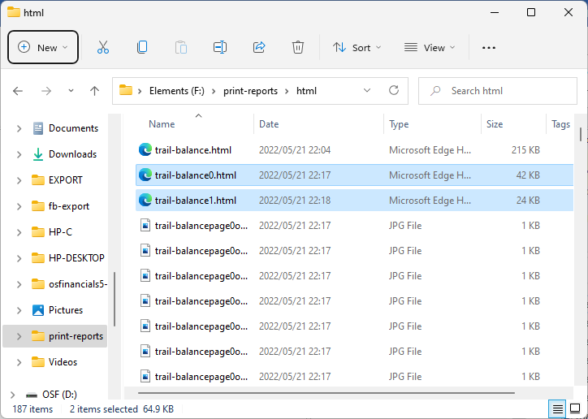
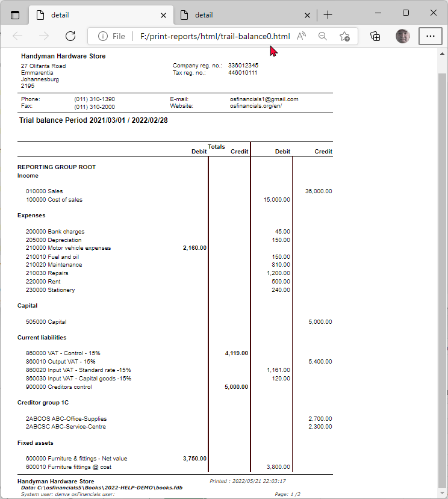
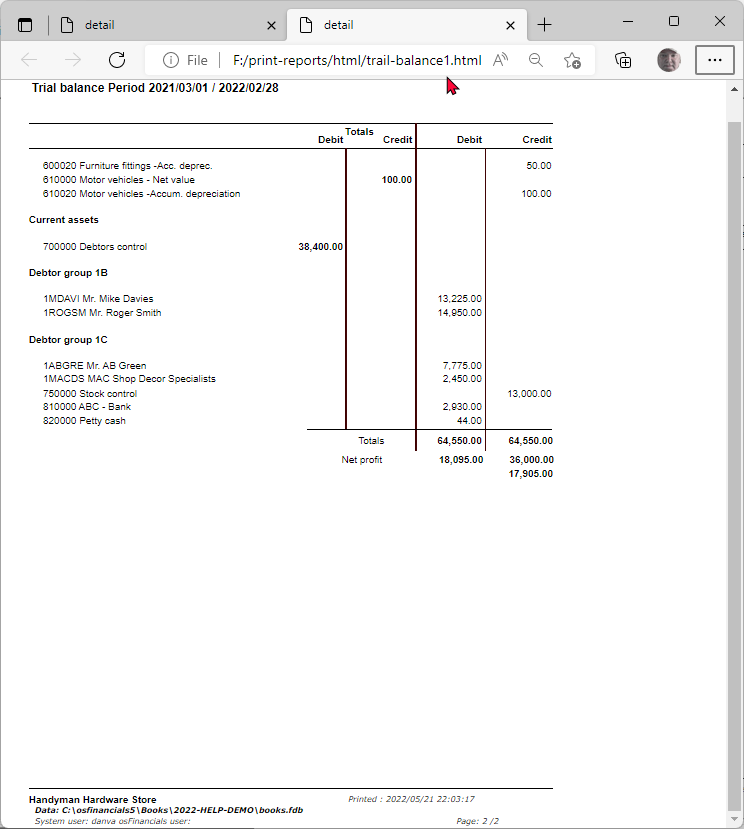
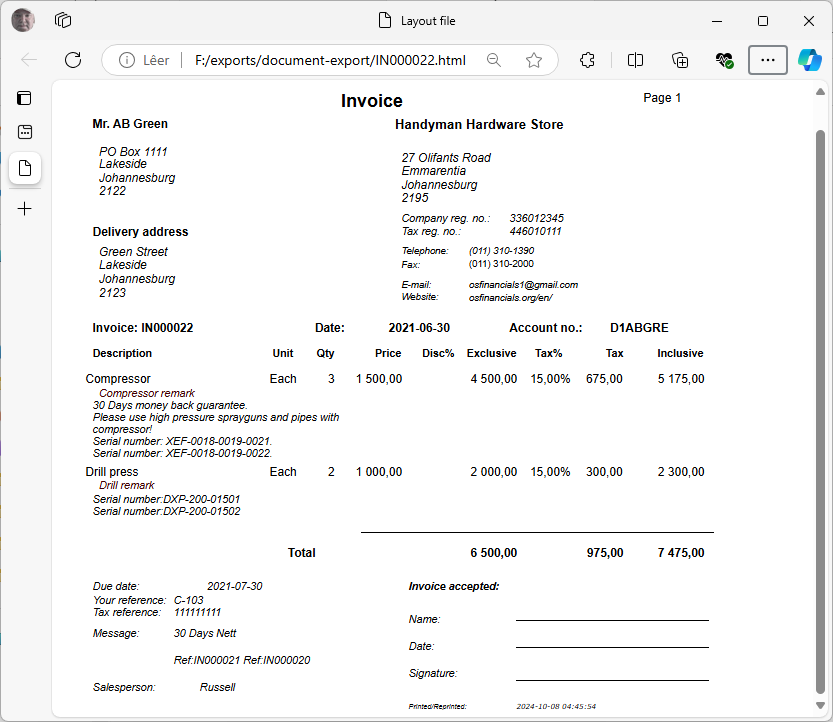

Reportman output - Save metafile as html
HTML (Hypertext Markup Language) files can be easily shared across all devices (e.g. desktops, laptops, mobile devices (tablets, cellular phones, etc.). It is also compatible and readable in the your system's associated default Web browser , e.g. Google Chrome, Firefox, Microsoft Edge, etc.
What apps or tools can be used to open html files?
HTML (HyperText Markup Language) files can be opened and viewed using a variety of applications and tools. Here are some popular options:
- Web Browsers
- Google Chrome: Available for Windows, macOS, Linux, Android, and iOS.
- Mozilla Firefox: Available for Windows, macOS, Linux, Android, and iOS.
- Microsoft Edge: Available for Windows, macOS, Android, and iOS.
- Safari: Available for macOS and iOS.
- Opera: Available for Windows, macOS, Linux, Android, and iOS.
- Text Editors
- Notepad: Pre-installed on Windows.
- Notepad++: Available for Windows.
- Sublime Text: Available for Windows, macOS, and Linux.
- Visual Studio Code: Available for Windows, macOS, and Linux.
- Atom: Available for Windows, macOS, and Linux.
- Vim: Available for Windows, macOS, and Linux.
- Emacs: Available for Windows, macOS, and Linux.
- TextEdit: Pre-installed on macOS.
- Gedit: Pre-installed on many Linux distributions.
- Integrated Development Environments (IDEs)
- Eclipse: Available for Windows, macOS, and Linux.
- IntelliJ IDEA: Available for Windows, macOS, and Linux.
- PyCharm: Available for Windows, macOS, and Linux.
- Visual Studio: Available for Windows and macOS.
- Online Tools
- JSFiddle: An online code editor that allows you to write and test HTML, CSS, and JavaScript. Accessible via any modern web browser.
- CodePen: An online code editor that allows you to write and test HTML, CSS, and JavaScript. Accessible via any modern web browser.
- JSBin: An online code editor that allows you to write and test HTML, CSS, and JavaScript. Accessible via any modern web browser.
- Mobile Apps
- Dcoder: Available for Android, it allows you to write and run HTML, CSS, and JavaScript code.
- Web Editor: Available for iOS, it allows you to write and view HTML files.
- Command Line Tools
- cat: Available on Unix-based systems (Linux, macOS).
- less: Available on Unix-based systems (Linux, macOS).
- more: Available on Unix-based systems (Linux, macOS).
- type: Available on Windows.
- more: Available on Windows.
- Other Tools
- Adobe Dreamweaver: Available for Windows and macOS, it is a professional web development tool that supports HTML.
- Brackets: Available for Windows, macOS, and Linux, it is an open-source text editor for web development.
These tools should cover most of your needs for viewing and editing HTML files across different operating systems.
Save metafile options
To save reports or document layout files as a html file:
- On the "Reportman print preview" screen, select Save (Ctrl+S)
 – This will launch the “Save metafile as” screen.
– This will launch the “Save metafile as” screen. - Select the directory (folder) where you need to save this file, if necessary.
- Enter a file name.
- Select "Html file (single) (*.html)" file type. This option is recommended for html output, as it does not save or export numbering bullets (numbering). as is the case with the "Html file" option.
- Click Save.
Html file (single)
An example of the "Trial balance" (consisting of 2 pages) saved as a "Html file (single)" file type, is as follows:
Page 1 -

Page 2 - (included in the single file - Scroll down to view page 2)

Html file
An example of the "Trial balance" (consisting of 2 pages) saved as a "Html file" file type.
If a report with multiple pages is saved as an Html file format, it will save the file in separate pages (and opened in separate tabs in your web browser). For example, a Trial balance consisting of 2 pages, will be printed as follows:
html - Output folder
In this example, 186 items is saved.
- name of report and "0" added for page 1.
- name of report and "1" added for page 2.
- It will also export numbering bullets (numbering) as objects for each page. The vertical lines, separating the columns, in the "detail" report used to print the Trial balance, Income statement, Balance sheet, etc. is exported as bullets (numbering) objects.

|
|
Trail-balance0.html is the first page of the saved html file. If the trial balance consists of more than one page name of report will increment to page "1" for page 2. It will also export numbering bullets (numbering) as objects for each page. |

Trail-balance0.html (first page)

Trail-balance1.html (second page)

Document layout files saved as the Html file type
Before fixes

|
|
If a layout file is saved as:
|
|
|
These issues in the HTML file type for layout files is not applicable to other file types. Overlapping labels and expressions: The "Delivery address" labels overlaps. Should you need to use this html format, explore by selecting other layout file formats. To fix this:
|
After Fixes

|
|
These issues in the HTML file type for layout files is not applicable to other file types. Including / excluding Rectangular objects on html output: Shapes - The If a file is saved to html file type:
|